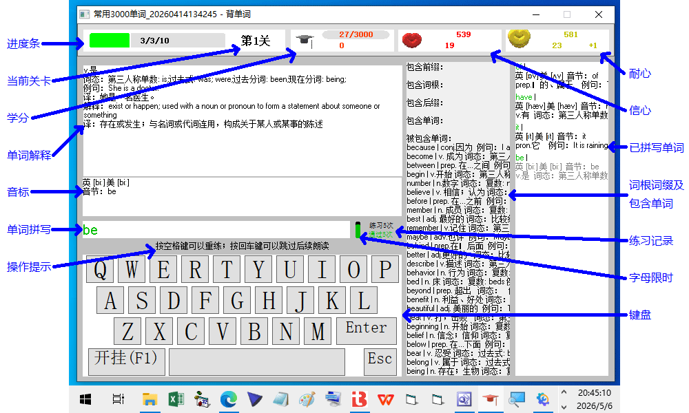
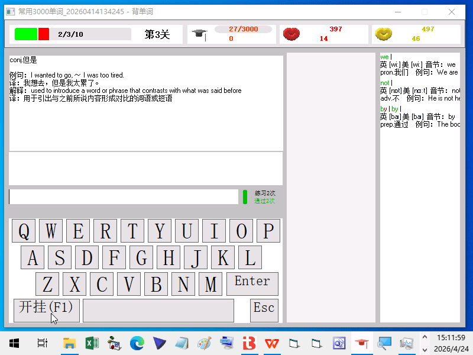
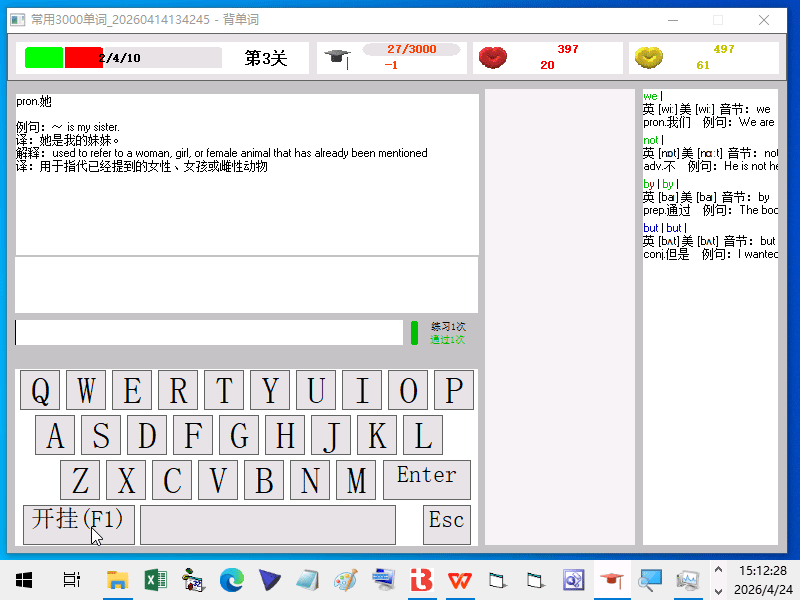
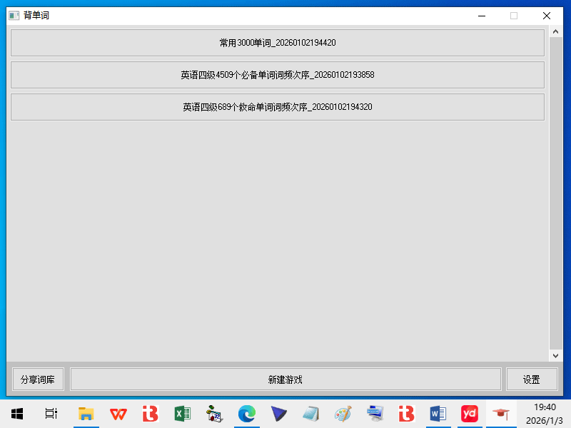
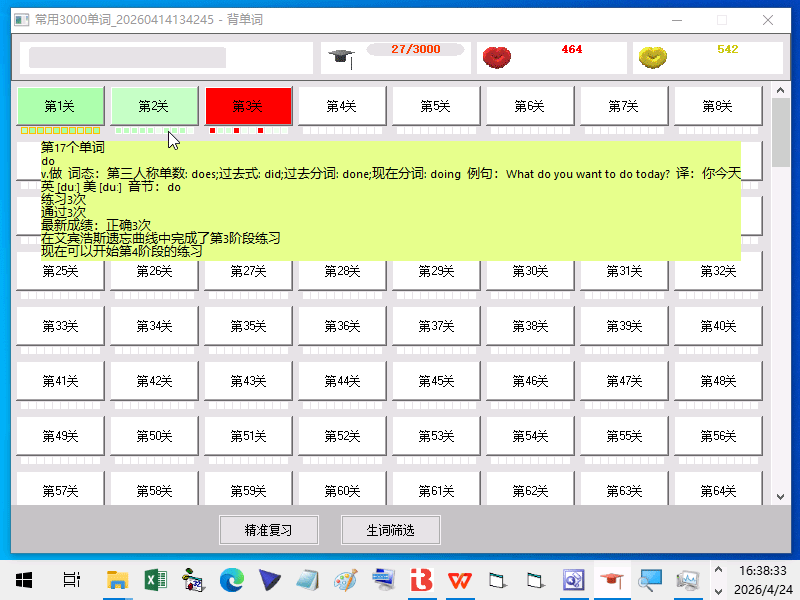

|
背单词程序使用说明 |
|
|
本程序将英语单词的练习与考查过程融合为游戏化场景，每通关 1 次可掌握 10 个英语单词。 1. 每一关包含 10 个英语单词，学习时程序会随机打乱这 10 个单词的出现顺序。
2. 单个单词的学习流程： 3. 通关判定规则：在开始朗读单词释义后、开始朗读单词前，正确拼写出该单词，即判定为该单词通过；10 个单词全部通过，本关即为通关。
拼写单词支持三种方式：外接物理键盘输入、鼠标点击界面下方虚拟键盘、触屏设备手指点击界面下方虚拟键盘。 程序提供阶梯式提示，降低记忆难度，具体操作如下： 1. 点击开挂键（F1）， 立即显示当前单词；按住开挂键（F1） 0.4 秒，直接显示当前关卡全部 10 个单词； 2. 按回车键，直接 给出当前单词的完整拼写； 3. 按空格键，立即 给出当前需要拼写的单个字母； 4. 若全程不参与拼写，仅通过视觉、听觉接收单词信息，也可完成一次基础记忆积累。
 练习界面 1. 进度条 展示本关学习进度：标注本关总单词数、已练习单词数、已通过单词数、当前正在练习的单词及通过状态。 2. 当前关卡 显示正在学习的关卡数，或 精准复习、生词筛选。 3. 学分、信心、耐心 • 学分：学会 1 个单词得 1 学分，已掌握单词再次拼写错误扣 1 学分； • 信心：每正确拼写 1 个字母可获得一定信心值，拼写错误不扣减； • 耐心：学习过程中获得耐心 ，字母倒计时消耗耐心； 开启一关学习时会消耗一定数量 信心和耐心。 4. 操作提示 学习过程中会同步展示非直观的操作说明与功能提示。 5. 单词拼写输入框（字母颜色含义） • 限定时间内正确拼写、未开挂：字母显示绿色； • 显示音标并朗读单词后正确拼写：字母显示橙黄色； • 开挂后正确拼写：字母显示蓝色； • 既显示音标又开挂后正确拼写：字母显示浅红色； • 拼写错误：字母显示红色； • 限定时间内未拼写：字母显示黑色。 6. 字母限时 为每个字母的拼写输入设定时间限制，倒计时过程扣减耐心，超时后程序自动给出并朗读该字母，该字母记为未拼写（黑色）； • 单词首字母拼写时限为 5 秒； • 若前一个字母未拼写，当前字母时限缩短至 0.5 秒； • 若当前字母已完成输入，朗读字母的间隔时长为 0 秒；
• 非首字母超时且未显示音标时，会先显示音标并朗读单词
2 次，此期间正确输入字母记为橙黄色（未通过）。 7. 练习记录 记录当前单词之前的总练习次数和累积通过次数，强行终止的练习过程不计入统计。 8. 已拼写单词列表 以不同颜色记录过往单词的拼写正误、练习次数；开挂模式下，会在拼写前提前显示当前单词。 9. 单词解释、音标 该部分信息与英文单词均来自程序加载的词库文件。 10. 虚拟键盘 点击虚拟键盘同样可以拼写单词。使用外接物理键盘操作，会同步触发虚拟键盘的点击提示。
 点击开挂(F1)键
 按住0.4秒开挂(F1)键 1. 回车键：单词未拼完时按 回车，直接给出完整拼写，该单词记为未通过；单词拼完后按回车，跳过单词释义朗读环节。 2. 空格键：单词未拼完时按空格，给出当前字母或代替非字母符号，单词拼写完成后按空格，重练当前单词。 3. P 键：单词拼写完成后按此键，延时 30 秒再继续后续单词练习。 4. Esc 键：完成当前单词练习后，重新随机排序本关 10 个单词并重新练习，本关已积累的信心、耐心值全部保留，且不再消耗原有信心、耐心值。 5. F1 键（开挂）：单击 或者按住超过0.4秒可在开启外挂、锁定外挂、关闭外挂三种状态循环切换； ￮ 开启外挂： 单击：拼写前提前显示当前单词；按住：显示全部单词； ￮ 锁定外挂：后续所有单词均提前显示； ￮ 关闭外挂：恢复拼写后显示单词的模式。
 游戏选择界面 1. 程序启动后进入选择游戏界面，点击已创建的学习计划，进入关卡选择界面； 2. 右键点击已创建的游戏，可执行删除操作，删除后游戏变为灰色不可选，下次启动程序后不再显示； 3. 点击新建游戏，通过文件对话框选择磁盘中的词库文件，即可创建新学习计划；创建完成后自动进入关卡选择界面，词库单词量较大时需稍作等待；新建的游戏会在下次启动程序后显示在选择界面中； 4. 可通过程序提供的 QQ、微信联系作者，分享或索取词库文件；也可以通过本页右侧的“分享词库”连接，直接打开词库分享页面。如果无法访问，请使用Watt Toolkit加速GitHub即可正常访问。 5. 在设置中可修改朗读语音、音质、音量、语速，需选用同时支持中英文朗读的语音，才能正常使用练习功能。
 关卡选择界面 1. 关卡状态标识 • 不同深度绿色背景：已通关的关卡，关内 每个单词对应艾宾浩斯不同练习阶段相加的 总和越高绿色越深； • 红色背景：练习过但未通关的关卡； • 白色背景：未练习过的关卡。 每关固定包含 10 个单词，学习时单词顺序随机打乱。 2. 关卡单词方格
每关下方 10 个小方格对应本关
10
个单词，鼠标移至方格可查看详细信息：单词在词库中的序号、拼写、释义、音标、累计练习次数、总正确次数、最新连续对错次数、艾宾浩斯遗忘曲线练习阶段。 • 中心白色：未练习过； • 中心红色：上次练习未通过； • 中心不同深度绿色：对应艾宾浩斯不同练习阶段，阶段越高绿色越深； • 边框黄色：未达到该阶段复习时间间隔； • 边框白色：已达到该阶段复习时间间隔。
3. 精准复习与生词筛选 每次均抽取 10 个单词进行练习，优先推荐使用该模式，仅需针对性强化特定单词时，再选择固定关卡练习： • 精准复习：基于艾宾浩斯遗忘曲线设计的复习方案，当前复习任务完成后，会自动扩展至未学习单词； • 生词筛选：结合单词最新成绩、正确率、练习次数、练习频率四个维度综合筛选生词。
精准复习共设置 11 个复习阶段，拼写错误直接退回
0
阶段重新练习；仅设定各阶段最短复习间隔，无最长间隔上限，练习疏密不影响阶段进阶，投入时间越多进度越快。 词库为UTF-16 LB 编码的 TXT 文本文件，每行记录 1 个单词，每行通过{{分段}}符分为 3 部分，依次为：英语单词、单词释义、音标；释义与音标中的换行，用{{分行}}符标记。可通过记事本打开《常用 3000 单词.txt》查看具体文本结构。 练习过程中点击右上角关闭按钮无法直接退出，连续三次点击关闭按钮可强制退出程序。 背单词这个程序现在只能在Windows系统上使用。 |
|
|
ＱＱ：397454617 微信：CQY397454617 |
|